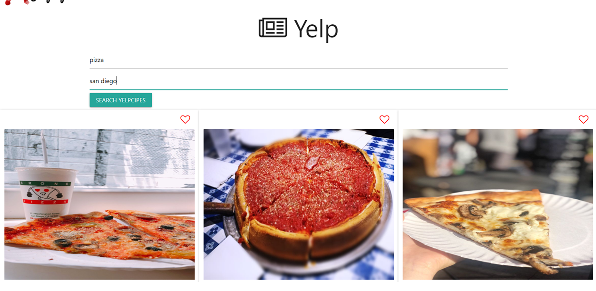
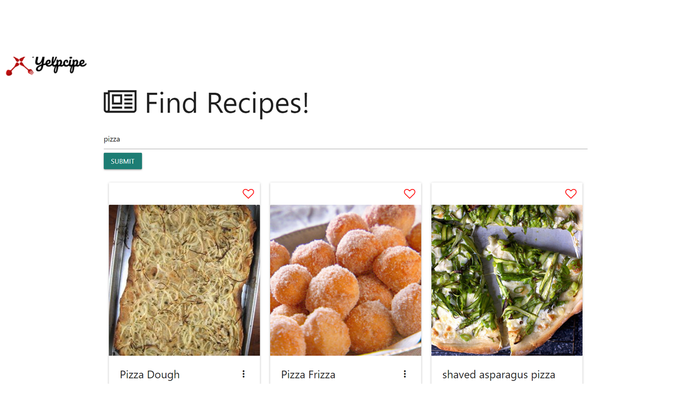

Phil Pak
About Me
(current)
Portfolio
Contact
Yelpcipes
GitHub Link:
https://github.com/tchan958/Yelpcipes
How It Works

First type in the desired food and the location
Then click the "Search" button and all the restaurants that make that type of food will be dynamically generated on the page
The favorites feature is an upcoming feature where users can click on the "Heart" icon located at the top right of each result
By doing so, the heart will become a solid red heart, indicating that it was favorited
After you find your desired food, navigate to the "Recipes Search" page to look for recipes

On the recipes search page, users can search up any recipes for the food that they are craving
Just enter in the desired food and click search
Different types of recipes will be dynamically generated and each result will list the ingredients that he/she needs